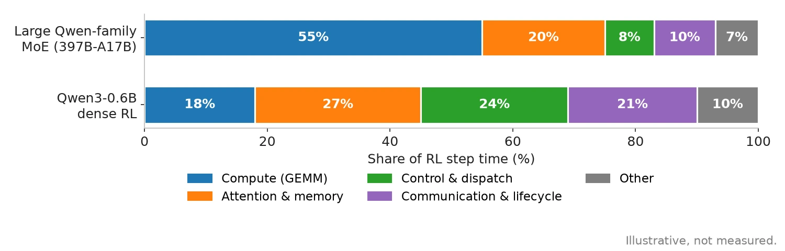
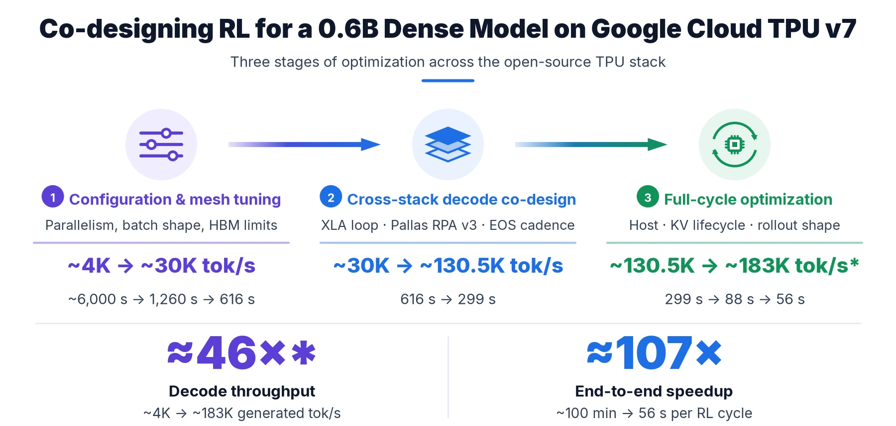
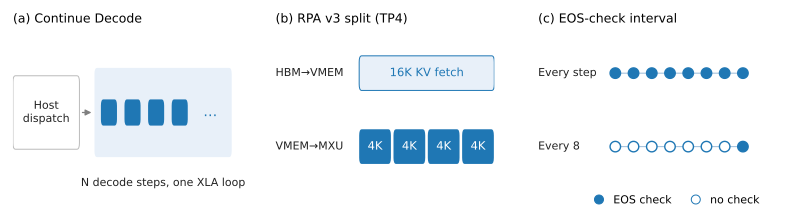
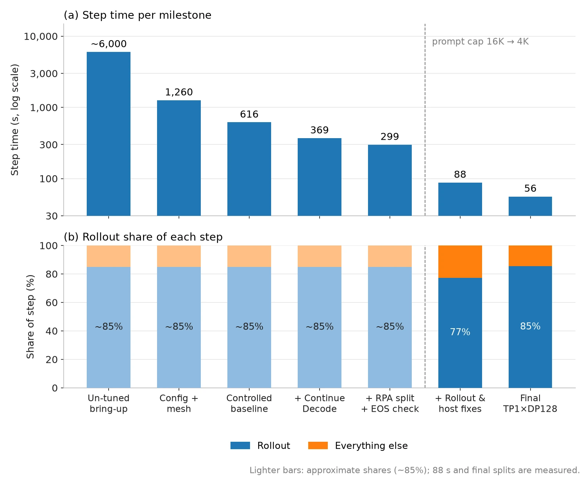

强化学习：通过 vLLM 在 TPU v7 上优化 6 亿参数稠密模型
作者
ASA： Loki Chen、Yang Song、Hongye Xie、Ming Lei、Greg Rehm、Chongyang Bai、Dre Olgiati、Bob Kamma、Tej Choudhary、Hang Cui、Imed Zitouni、Hamed Firooz。
Ranking AI Research： Mingfu Liang、Kavosh Asadi、Yufei Li、Frank Shyu、Parish Aggarwal、Senthil Manickavelu、Xi Liu、Luke Simon。
要点
- 在小型稠密模型强化学习中，解码调度、同步、注意力几何形状和 KV 缓存生命周期会成为一阶瓶颈。
- 我们对开源 TPU 软件栈 vLLM、Tunix、MaxText 和 Pallas 进行了协同设计，并把改动全部合入上游。Google Cloud TPU v7 用户可以直接使用已合并的 tpu-recipes 配方以及附录 B 中的参数，复现约 56 秒、约 18.3 万 token/s 的路径。
- 在保留完整 8,192 token 响应预算的情况下，Google Cloud TPU v7 上完整的 rollout 到更新周期从约 100 分钟降至约 56 秒，提速 107 倍。
小模型为何对研究很重要
生成式推理正在改变排序和决策系统。GR2（Generative Reasoning Re-ranker）等模型（arXiv:2606.31984）已经证明，生成式推理可以显著改善重排序质量。接下来的问题是：对于大规模排序和决策系统，策略模型最小可以做到多小，同时仍保留生成式推理能力？
由更强教师模型蒸馏得到的 6 亿参数稠密学生模型，可以用更低延迟和成本服务，从而覆盖更多流量、更快刷新模型，并在一天内完成更多强化学习实验。但这要求整个训练周期足够快，而模型 FLOPs 只是其中一部分。在 6 亿参数规模下，rollout 生成、同步和框架开销占据越来越多的实际时间。
相比前沿稠密模型或 MoE，6 亿参数模型每层的矩阵运算少得多，因此主机分发、同步和 KV 缓存生命周期等固定系统开销会把瓶颈从 FLOPs 转移到协调。
研究挑战

我们在一个包含 64 颗 Google Cloud TPU v7（Ironwood）芯片的切片上，对 6 亿参数模型运行强化学习。它的权重远少于通常推动分布式训练研究的大型稠密模型和 MoE，但较小的规模反而让工作负载更难高效运行。
大型稠密或 MoE 模型的每层矩阵计算量很大，设备利用率通常由参数分片、激活传输、专家路由和大型矩阵单元利用等问题决定。这些问题虽然困难，但成本会随模型规模明显变化。
小型稠密模型改变了平衡。每台设备上的有效矩阵运算减少，但许多固定成本并不会减少：
- 主机仍需调度每次解码迭代；
- 每个 token 仍需经过完整注意力栈；
- 每层仍会启动内核或进入已编译内核；
- 每个 rollout 步骤仍要更新和同步权重；
- 运行时仍要跟踪数千个序列及其停止条件；
- 强化学习周期仍包括奖励计算、训练、缓存失效和分布式编排。
模型越小，这些固定成本占每一步的比例越高。几毫秒分发开销、过大的注意力计算块，或每次更新时重复分配缓存，都可能压过我们希望 TPU v7 执行的有效工作。因此，小型稠密模型强化学习是一种对协调极其敏感的工作负载，需要硬件、软件和模型协同设计。
协同设计为何重要

和其他分布式加速器软件栈一样，第一步是让并行方式、批并发度、网格形状和 HBM 限制与工作负载几何形状匹配，建立干净基线。剩余瓶颈位于更深的开源软件栈中，并且特属于长上下文、高并发、小模型强化学习和频繁的 on-policy 权重同步。
我们分析完整强化学习周期，找出每个新瓶颈背后的机制，然后分三个阶段向下优化 MaxText、Tunix、vLLM/tpu-inference、Pathways/XLA 和 Pallas：配置调优；跨 XLA 设备循环、Pallas VMEM 流水线及主机设备调度器的解码协同设计；以及主机开销、KV 缓存生命周期、训练注意力几何形状和 rollout 形状的全周期优化。
配置调优在约 3 万 token/s 处达到平台期；解码协同设计把整批解码速度提高到约 13.05 万 token/s；最终配置在整个 rollout 上平均维持约 18.3 万 token/s。
整个过程中，模型、GRPO 配方、每步 completion 数和 8,192 token 响应上限保持不变；提示上限调整过一次，详见评测方法。快速路径均已合入上游，多数为显式启用选项，附录 B 列出了最终配置。
评测方法和数据集
由于 Meta 的专有广告排序、生成式推荐模型和用户交互日志无法公开，我们使用 Qwen3-0.6B 和公开数学推理提示构建了开放、可复现的代理基准。它模拟生产生成式排序的系统几何形状：一个不足 10 亿参数的紧凑稠密策略模型，在数千个并发候选上生成最长 8,192 token 的多步推理轨迹。
核心工作负载是 Qwen3-0.6B Group Relative Policy Optimization（GRPO）true-8K：256 个提示 × 每提示 8 次生成，即每次 rollout 共 2,048 个 completion；最多生成 8,192 token；BF16；同步 on-policy 执行。启动调试和阶段 I–II 里程碑（直到 299 秒）使用 NuminaMath 和 OpenMath 提示，提示上限为 16,384 token、最大上下文为 24K。从 88 秒里程碑开始，使用 OpenMathInstruct-2 的 train_1M，提示上限为 4,096 token、上下文为 12,288 token。
模型、GRPO 配方、每步 completion 数和 8,192 token 响应上限完全相同。两套数据中的真实提示都很短：NuminaMath 约 170 token，OpenMathInstruct-2 平均 149 token，因此每步生成工作量可比；较大的提示上限主要为每个序列预留更多 KV 容量。报告的是稳定状态下完整周期的实际时间，不含编译、预热和检查点写入。
指标定义。 步骤时间是完整 rollout 到更新周期的稳定状态墙钟时间，即 TensorBoard 的 perf/train/global_step_time，取 20 步运行中第 3 步及以后的中位数。最终配置的 56 秒是最快稳定步骤，p10 为 55.7 秒，中位数为 57.9 秒。解码吞吐只统计生成 token，不含预填充，并在 64 芯片切片上聚合。299 秒及以前的里程碑使用受控运行中的整批解码速度；88 秒和最终配置则用单次 rollout 的生成 token 数除以完整 rollout 阶段时间，因此包含低占用尾部，是整批速度的保守下界。
里程碑概览。 rollout 始终占每步大部分时间。在 299 秒里程碑以前，它占步骤的 80%–90%，因此这些行中的阶段时间为近似值。88 秒和最终配置的拆分来自逐阶段计时器。
| 里程碑 | 步骤时间 | 解码吞吐 | Rollout | 其他阶段 |
|---|---|---|---|---|
| 未调优启动配置 | 约 6,000 秒 | 约 4K token/s | 约 5,100 秒 | 约 900 秒 |
| 配置和网格调优 | 1,260 秒 | 约 30K token/s | 约 1,070 秒 | 约 190 秒 |
| 受控基线（共置、重新平衡 TP/DP） | 616 秒 | 约 30K token/s | 约 525 秒 | 约 90 秒 |
| 加入 Continue Decode | 369 秒 | 约 64.9K token/s | 约 315 秒 | 约 55 秒 |
| 加入 RPA 块拆分和 EOS 检查间隔 | 299 秒 | 约 130.5K token/s | 约 255 秒 | 约 45 秒 |
| 加入连续批处理解码、分片采样、奖励进程池、packing 和 GC 控制 | 88 秒 | 约 135K token/s | 68 秒 | 20 秒（训练 8 秒、权重同步 7 秒） |
| 最终配置 TP1×DP128 | 最快稳定步骤 56 秒（p10 55.7 秒）；20 步中位数 57.9 秒 | 约 183K token/s | 49.1 秒 | 8.4 秒 |
最终配置的一次 rollout 生成约 900 万 token：2,048 个 completion，平均长度约 4.4K，其中 27.8% 达到 8,192 token 上限。阶段时间中位数为 rollout 49.1 秒，训练、权重同步、奖励和缓存生命周期合计 8.4 秒，rollout 占 85%。
在 Google Cloud TPU v7 上优化
true-8K 参考工作负载运行在 64 芯片、4×4×4 的 TPU v7 切片上，rollout 并行方式为 TP1×DP128：128 个独立 vLLM 引擎，每个 TPU 设备一个、每颗芯片两个；每个引擎保存完整的 6 亿参数模型（BF16 下 1.2 GB）和全部 8 个 KV 头，请求通过轮询数据并行路由分发。早期使用四路张量并行来汇集 KV 缓存所需 HBM，阶段 III 会量化迁移到 TP1×DP128 的收益。
完整步骤包括 rollout 生成、奖励和优势构造、MaxText 训练、策略权重同步、KV 缓存和请求状态生命周期，以及下一次 rollout 的准备工作。
我们有意从串行整批设计开始，使策略所有权、权重版本、缓存失效和计时边界保持明确。Pathways 管理多主机网格和内存内转换，学习器与采样器在周期内共享 64 芯片资源。后来也启动了异步强化学习原型，但主要性能阶梯仍使用串行路径，以便在不增加硬件的情况下比较优化。
阶段 I：对齐基础工作负载配置，建立正确基线
最初未调优的启动配置包含 2,048 个同步 24K 上下文 rollout，尚未调整网格或使用连续设备端解码，生成速度约 4K token/s，完整周期约 100 分钟。在修改运行时或内核前，我们首先扫描现有软件栈的配置空间，包括 TP/DP 网格、批大小与并发、最大活动序列和 token 预算、HBM 与主机内存限制、提示和响应形状、采样器与训练器资源平衡，以及 Pathways JobSet 的放置、编译、检查点和 staging 行为。
这一阶段把解码吞吐从约 4K 提高到约 30K token/s，提升 7.5 倍；完整周期从约 100 分钟降至 21 分钟，即从 6,000 秒降至 1,260 秒，提速 4.8 倍。共置和 TP/DP 主机网格重新平衡进一步建立了 616 秒受控基线。
解码吞吐的改善远大于全周期延迟，因为整批解码只是 rollout 的一部分；预填充、主机返回，以及长 completion 的低占用尾部并未同步加速。
阶段 II：从 MaxText、vLLM 到 XLA、Pallas 的跨栈解码协同设计
在约 30K token/s 后，继续扫描配置不再有收益。分析显示，TPU v7 每个解码步骤的设备执行只需数毫秒，但端到端 rollout 主要受主机设备分发往返、Flax NNX 路径上的 XLA 编译与 runner 开销，以及 24K 上下文下 Pallas 内核流水线停顿影响。
执行路径为：
MaxText → Tunix → vLLM/tpu-inference（Runner 与 Scheduler）→ Ragged Paged Attention v3/Pallas → Pathways/XLA
阶段 II 把稳定解码吞吐提高到约 130.5K token/s，是 30K 工作点的 4.35 倍，并把受控阶梯中的完整步骤从 616 秒降至 299 秒。
在 Flax NNX、vLLM 和 XLA 之间编译多步设备解码循环
自回归解码在 token 之间是串行的，但对 6 亿参数模型来说，每个 token 都重新进入 Python 主机调度器代价过高：主机设备分发、请求状态记账和 trace 序列化的固定成本会超过一次前向传播的矩阵计算。
vLLM 的 Continue Decode 把多次迭代放进一个已编译 XLA 设备循环。为此，我们修复了 flax_nnx 服务路径上的 continue_decode 并避免丢弃 XLA 编译选项（tpu-inference #3374），消除了已编译线性层之间的可变元数据泄漏（#3101），阻止 runner 把步骤填充到 max_num_batched_tokens 以上（#3466），并在 2,048 个并发 rollout 下限制逐步请求 ID trace 序列化开销（#3510）。
在受控 MaxText 生产阶梯中，这条跨栈路径把干净步骤从 616 秒降至 369 秒，减少 40.1%。这说明小模型正在等待运行时和编译器持续向 TPU v7 MXU 提供设备工作。
为 24K 上下文缓存拆分 RPA v3 KV 提取块和计算块
主机分发被摊销后，设备上的注意力内存移动成为主要瓶颈。Pallas 实现的 Ragged Paged Attention v3 使用双缓冲 VMEM 流水线，让 HBM 到 VMEM 的 DMA 与 TensorCore 计算重叠。但默认启发式把 KV 提取块和计算块绑定为约 16K token 的单一大块。在 24K 上下文工作负载上，16K 计算块使双缓冲流水线缺乏数据，每个计算阶段都要等待大型 KV tile 传输，降低 DMA 与 MXU 的重叠深度。
我们重构内核接口，在解码、预填充和混合路径上分离 HBM 提取几何形状与 VMEM 计算 tiling（tpu-inference #3102），并把控制项传到 tpu-inference 的 MaxText 服务桥（#3395）和 MaxText RL 配置（MaxText #5100）。保持 16,384 token 的 HBM 提取块以最大化突发 DMA 带宽，同时把执行切分为 4,096 token 的 VMEM 计算块，恢复了深度 DMA/MXU 重叠，解码吞吐从 64,929 提高到 96,273 token/s，增幅 48%。
该结果使用四路张量并行测得。最终 TP1×DP128 配置中，每颗芯片拥有全部 8 个 KV 头，因此重新调优为 2,048 token 解码块：RPA_V3_DECODE_BLOCK_SIZES=1,2048,1,2048，并配套覆盖预填充和混合路径；TP1 下 4,096 token tile 更慢，8,192 token tile 会超过 VMEM。
降低融合解码循环中的 EOS 检查频率
即使处于融合设备循环，Continue Decode 仍在每个 token 步骤执行设备端归约，检查是否有序列命中 EOS，并评估提前退出条件。在 2,048 个并发 rollout 下，这会在已编译循环中形成不必要的同步屏障。
我们让关闭检查时跳过逐步 EOS 归约（tpu-inference #3509），并提供频率控制（#3174）；逐序列 masking 仍保持真实 EOS 边界。
每步检查会产生设备同步开销；每 32 步检查一次又会延迟返回主机调度器，无法及时逐出已完成序列和释放批 slot。8 步间隔在不中断 XLA 循环与及时回收之间取得平衡。它与 RPA 块拆分共同把步骤从 369 秒降至 299 秒。
最终配置完全关闭循环内 EOS 检查，即 CONTINUE_DECODE_EOS_CHECK_INTERVAL=0，并把每次返回主机前的融合循环延长到 512 个解码步骤，max_decode_steps=512；逐序列 masking 仍保持 EOS 边界。
| 机制 | PR | 实测影响 |
|---|---|---|
| Continue Decode，已编译 XLA 解码循环 | tpu-inference #2507、#3374、#3101、#3466、#3510 | 步骤 616 秒 → 369 秒，减少 40.1% |
| RPA v3 HBM 提取/VMEM 计算拆分 | tpu-inference #3102、#3395；MaxText #5100 | 64.9K → 96.3K token/s，提升 48% |
| EOS 检查间隔 8 步 | tpu-inference #3068、#3174、#3509 | 与 RPA 拆分共同实现 369 秒 → 299 秒 |

阶段 III：优化完整强化学习周期
解码达到 130.5K token/s 后，其他成本决定步骤时间。299 秒步骤的大部分仍是 rollout，并受到低占用尾部拖累；其余时间用于 KV 缓存重新分配、权重同步、主机端奖励、反分词、垃圾回收，以及训练注意力内核。
阶段 III 分两段。第一段在 8 月下旬把步骤从 299 秒降至 88 秒，其中 rollout 68 秒、训练 8 秒、权重同步 7 秒。连续批处理解码窗口把已完成序列变为惰性 masked slot，而不是命中 EOS 就退出，从而保持融合循环充满；词表分片采样消除了每个解码迭代中完整词表 logits 的 all-gather（每个 DP rank 约 78 MB）以及 top-k/top-p 扫描。串行奖励评分原先每步约 30 秒，被移至进程池；序列 packing 和可配置垃圾回收缩短了训练与主机时间。该阶段的单项贡献未分别隔离，提示上限也在此时改为 4K。
KV 持久化、更快的权重同步和反分词、Splash Attention 重调，以及最终 rollout 配置继续把步骤从 88 秒降到 56 秒。
将逻辑缓存失效与物理分配分离
每个强化学习步骤都会改变策略权重。旧策略计算的 KV 绝不能被新策略读取。保守生命周期会重置前缀缓存、删除物理 KV 分配、同步权重，再重新分配缓存。
我们观察到，重置前缀映射已经让所有旧块在逻辑上不可达。只要 HBM 余量允许，权重更新期间可以安全保留物理分配，即使其中内容无效；下一次 rollout 会在读取前重新预填充并覆盖这些块。
在早期 TP4 软件栈上，显式启用的 KV 持久化把设置阶段从约 37 秒降至 3 秒。在最终配置上，free_kv_cache_during_weight_sync=false 仍把 20 步中位数从 60.3 秒降至 57.9 秒。权重同步展开（Tunix #2232）和反分词、log-prob 提取与解码重叠（#2233）与 KV 持久化一同进入 88→56 秒阶段。奖励进程池和可配置 GC 则属于 299→88 秒阶段。
公开实现默认关闭，并要求两个安全条件：每次策略更新都必须重置前缀映射；权重重新分片不能依赖释放缓存来获得 HBM 余量。
针对训练形状重新调优 Splash Attention
在 88 秒步骤中，训练占 8 秒。启用强化学习序列 packing 后，我们把训练切换到 flash attention，并按生产序列几何形状重新调优 Splash Attention 块大小：
attention='flash' \
sa_block_q=1024 sa_block_q_dkv=1024 sa_block_q_dq=1024 \
sa_block_kv=2048 sa_block_kv_compute=2048 \
sa_block_kv_dkv=2048 sa_block_kv_dkv_compute=2048 sa_block_kv_dq=2048 \
sa_use_base2_exp=false
同一时间窗口的对照测试中，该重调每步节省约 2 秒。
最终 rollout 配置
下表列出 88→56 秒阶段的剩余改动。部分收益来自软件版本本身：在包含 Tunix #2232、#2233、#2309 和 MaxText #5235 的上游 head 镜像上，原封不动运行 88 秒启动器，在第二个集群测得 74 秒；随后通过启动参数调优达到最终结果。集群差异没有单独分离。
| 改动 | 效果 |
|---|---|
| max_decode_steps 从 128 增至 512 | rollout 减少约 4 秒 |
| TP4 → TP1×DP128，使用轮询 DP 路由 | 每步约 1 秒；DP128 下默认 least-loaded 路由每步会多约 35 秒 |
| 训练使用 flash attention 和 Splash 块大小 | 每步约 2 秒 |
| 权重更新期间保持 KV 物理分配 | 20 步中位数 60.3 秒 → 57.9 秒 |
| reward_num_workers=32、math_verify_num_procs=64 | 小幅收益 |
| 权重同步展开和反分词重叠 | 未单独隔离 |

未奏效的方法
减少权重和 KV 字节量几乎没有提高解码速度
权重 INT8 路径没有带来有意义的解码改善。对于长上下文的 6 亿参数模型，权重只占数据移动和固定执行成本的一小部分。FP8 KV 缓存虽然使容量翻倍，但延迟收益远小于按带宽比例推算的数值。这排除了一个假设：此工作点的解码时间不只取决于 HBM 字节量，分发、融合、逐迭代固定成本和其他内核会形成下限。
共享前缀 cascade attention 在生产规模下没有净收益
同一提示的 8 次生成看起来非常适合显式共享前缀注意力。早期原型相对朴素 JAX 基线表现不错，但与生产规模的真实流水化 RPA 内核比较时，优势大幅下降。组合前缀/后缀 cascade 没有净收益，因为标准 paged-attention 已能充分利用共享物理页，额外调用和合并开销耗尽了剩余机会。
更大的训练 microbatch 没有缩短训练
内存调优后可以放入更大 microbatch，但即使梯度累积循环减半，总训练 FLOPs 也没有减少，步骤时间不变。较轻的重物化同样只释放 HBM，没有缩短计算受限的训练路径。
缩短响应上限的收益递减
把响应上限从 8,192 降到 6,144 会移除较长的低占用尾部，达到约 56 秒，但它改变了强化学习配方，因此只作为独立候选。继续降至 5,120 没有可靠额外收益，因为训练和设置时间已经形成下限。
这是最终 Splash 和 rollout 改动前的软件栈实验。之后的 Splash、KV 持久化、权重同步和最终 rollout 改动，在保留 8,192 token 上限的情况下达到相同延迟；本文所有核心数字都使用完整上限。
优化循环
性能曲线来自反复执行同一工程循环：
- 测量完整周期，决策指标是 rollout 到更新的时间；
- 分析当前最佳配置，每次成功优化都会改变阶段占比；
- 建立具体机制假设，定位同步、分配、块形状或数据移动；
- 尽量一次只改变一个机制，高风险路径用环境变量隔离并默认关闭；
- 使用专用切片或同一时间窗口对照，避免集群放置和争用掩盖小变化；
- 验证 EOS 边界、策略版本、token/log-prob 对齐、有限损失、缓存失效和奖励行为；
- 保存负面结果，关闭错误的大型工程分支同样是成功实验；
- 再次分析，因为下一轮瓶颈通常已经改变。
| 改动 | 结论 |
|---|---|
| Continue Decode | 采用：616 秒 → 369 秒 |
| RPA v3 块大小覆盖 | 采用：TP4 下解码吞吐 +48%；TP1 使用 2K 解码块 |
| EOS 检查间隔 8 步 | 被后续方案取代；最终关闭检查并每次主机返回前运行 512 步 |
| 权重更新期间 KV 持久化 | 采用：早期 TP4 设置 37 秒 → 3 秒；最终 60.3 秒 → 57.9 秒 |
| 奖励评分进程池 | 采用；串行评分约 30 秒，单项收益未隔离 |
| 连续批处理解码窗口、词表分片采样 | 用于 299→88 秒阶段 |
| 序列 packing、flash/Splash 重调 | 采用：Splash 每步约节省 2 秒 |
| 512 步循环、TP1×DP128 轮询路由 | 采用：每步约节省 4 秒和 1 秒 |
| 权重 INT8 | 未采用：无明显解码收益 |
| FP8 KV 缓存 | 未采用：容量翻倍，延迟收益很小 |
| 组合前缀/后缀 cascade attention | 未采用：生产规模无净收益 |
| 更大训练 microbatch | 未采用：步骤时间不变 |
| 缩短响应上限 | 未采用：6,144 在旧栈达到约 56 秒但改变配方；5,120 无可靠额外收益 |
系统优化暴露学习瓶颈
56 秒结果直接从原始 6 亿参数检查点开始强化学习，没有 SFT warm-start，因此系统压力很大：2,048 个 completion 中 27.8% 达到 8,192 token 上限，平均长度约 4.4K。使用 SFT warm-start 的策略会收敛到更简洁的推理轨迹，因此训练周期会比本文步骤更快。
轻量格式与任务 SFT warm-start、奖励塑形和 on-policy 强化学习后训练（GRPO 或 Decoupled Clip and Dynamic Sampling Policy Optimization，DAPO）结合，可教会紧凑策略用更短的平均 completion 解决推理与排序任务。由于最终配置中 rollout 占步骤的 85%，策略行为本身也是硬件看到的工作负载。
后续工作
我们计划在 Google Cloud TPU v7 上继续推进：
- 将多阶段 SFT + RL（GRPO/DAPO）配方扩展到更多生成式排序和推理模型；
- 自动调优 Pallas RPA v3 与 Splash Attention 启发式，根据模型和上下文形状选择 DMA/计算块；
- 上游化可精确重放的分片采样，实现确定、可复现的多主机强化学习评估；
- 扩展到 128 芯片 4×4×8 及更大的 TPU v7 切片；
- 支持具有严格策略版本和行为 log-prob 保证的异步及智能体强化学习；
- 使用 MPMD 解耦 rollout 与训练，在专用 TPU 子网格上重叠生成和学习器更新。
结论
项目开始时，一个看似容易运行的小型稠密模型完成一次强化学习周期需要约 100 分钟。配置和网格调优首先带来 7.5 倍解码吞吐；tpu-inference、Pallas RPA v3 和 MaxText 的解码路径改动把步骤从 616 秒降到 299 秒；连续批处理解码、词表分片采样、奖励进程池、序列 packing 和 GC 控制把它降到 88 秒；KV 持久化、权重同步与反分词改动、Splash 重调和 TP1×DP128 rollout 最终达到 56 秒。
在 Google Cloud TPU v7 上，解码吞吐从约 4K 增至约 183K token/s，提升约 46 倍；端到端周期从约 100 分钟降至约 56 秒，提速 107 倍。附录 A 中所有运行时、训练器和内核 PR 都已合入 tpu-inference、Tunix 和 MaxText；tpu-recipes 配方配合附录 B 参数可复现 56 秒、约 183K token/s 的配置。
致谢
感谢 Tianyu Gu、Alisa Chen、Pysith Vanuptikul、Summer Yang、Hossein Sarshar、Jianting Cao、Weiren Yu，以及 Google Cloud TPU、vLLM、Tunix 和 MaxText 工程团队共同设计并上游化这些优化。
附录 A：已合并的上游 PR
此次优化期间共有 23 个 PR 合入上游，最后一个于 2026 年 9 月 21 日合入。
vLLM / tpu-inference：10 个
- #2507 continuous decoding
- #3068 continuous decoding EOS
- #3101 修复线性层可变默认元数据泄漏
- #3102 RPA v3 解码、预填充、混合块大小环境覆盖
- #3174 融合解码循环 EOS 检查间隔
- #3374 修复 flax_nnx 路径并保留编译选项
- #3395 在 MaxText 服务路径转发块大小覆盖
- #3466 不把步骤填充到 max_num_batched_tokens 以上
- #3509 关闭 EOS 检查时跳过逐步归约
- #3510 限制 trace annotation 的请求 ID
Tunix：7 个
- #1904 可选奖励函数进程池
- #2086 可配置逐步 gc.collect()
- #2088 空分析窗口时关闭 profiler
- #2231 权重同步期间可选释放 vLLM KV 缓存
- #2232 权重同步展开扫描层
- #2233 反分词和 log-prob 提取与解码重叠
- #2309 修复 packed-row 转换
MaxText：6 个
- #5100 RL 序列 packing 和 vLLM 块大小参数
- #5235 extract_answer 对响应长度线性扩展
- #5236 转发 GC 控制
- #5255 转发奖励 worker 参数
- #5270 恢复 ragged_gather_reduce v2 的布局设置
- #5289 加入权重同步期间 KV 缓存生命周期配置
奖励 worker、GC 控制和 KV 缓存生命周期都同时需要运行时改动与训练器配置。
附录 B：复现方法
配方。 56 秒配置已作为 AI-Hypercomputer/tpu-recipes#387 合并，配套 README 包含一个 tpu7x 4×4×4 切片的 Pathways JobSet、带依赖 pin 的镜像构建、检查点转换和步骤时间读取器。它不需要源码补丁，验证运行的步骤时间中位数为 56.94 秒，p10 为 55.2 秒，n=18。
软件。 23 个 PR 均包含在 MaxText v0.2.6 中，并固定 Tunix、tpu-inference、vLLM、JAX/jaxlib 0.11.0 和 libtpu 0.0.44。本文测量使用更早但包含相同改动的构建。
硬件。 一个 Google Cloud TPU v7 4×4×4 切片，共 64 芯片、16 主机，由 Pathways 管理多主机网格。
工作负载。 Qwen3-0.6B、OpenMathInstruct-2 train_1M、GRPO；每步 256 提示 × 8 次生成；运行 20 步；步骤时间取第 3 步及以后的中位数。
环境变量：
export RPA_V3_DECODE_BLOCK_SIZES="1,2048,1,2048"
export RPA_V3_MIXED_BLOCK_SIZES="512,1024,256,512"
export RPA_V3_PREFILL_BLOCK_SIZES="512,1024,256,512"
export CONTINUE_DECODE_EOS_CHECK_INTERVAL="0"
export DP_SCHED_ROUTING=round_robin
MaxText RL 训练命令，在 MaxText 仓库根目录运行，并通过 load_parameters_path 加入检查点路径：
PYTHONPATH=src python3 -m maxtext.trainers.post_train.rl.train_rl src/maxtext/configs/post_train/rl.yml \
model_name=qwen3-0.6b tokenizer_path=Qwen/Qwen3-0.6B \
dataset_name=nvidia/OpenMathInstruct-2 train_split=train_1M \
hf_train_files='hf://datasets/nvidia/OpenMathInstruct-2/data/train_1M-*.parquet' \
batch_size=256 rl.num_generations=8 \
rl.grpo_beta=0.0 rl.grpo_epsilon=0.2 rl.epsilon_high=0.28 learning_rate=1e-6 \
max_prefill_predict_length=4096 max_target_length=12288 kv_cache_buffer=4352 \
decode_sampling_temperature=0.8 decode_sampling_top_k=50 decode_sampling_nucleus_p=0.95 \
rollout_data_parallelism=128 rollout_tensor_parallelism=1 \
max_num_seqs=256 max_num_batched_tokens=33280 hbm_utilization_vllm=0.3 \
vllm_block_size=128 enable_prefix_caching=false async_scheduling=False \
vllm_additional_config='{"enable_continue_decode": true, "max_decode_steps": 512}' \
max_seq_token_per_tpu=12288 train_micro_batch_size=32 \
free_kv_cache_during_weight_sync=false gc_collect_after_weight_sync=false \
reward_num_workers=32 math_verify_num_procs=64 \
attention=flash \
sa_block_q=1024 sa_block_q_dkv=1024 sa_block_q_dq=1024 \
sa_block_kv=2048 sa_block_kv_compute=2048 \
sa_block_kv_dkv=2048 sa_block_kv_dkv_compute=2048 sa_block_kv_dq=2048 \
sa_use_base2_exp=false
启用 Continue Decode 时必须保持 async_scheduling=False，因为融合设备循环路径需要同步主机调度。